Welcome to Test Automation Framework User's Guide. This user guide is designed to provide documentation for testers in performing software automation testing. The functionalities will be covered in different sections of this guide.
A Test Automation Framework is a compilation of tools, libraries, rules, and/or guidelines for creating or designing test scripts. The system uses a keyword-driven framework that allows testers to create, edit, and update test scripts in excel sheets. After automated test execution, the system will generate a detailed test report. At the simplest level, the system is composed of three things, the Test Scripts, Framework, and Test Report. The Framework executes the content of the test scripts and produces a test report at the end of testing.
The test script is composed of five columns: Test Cases, Keyword, Locator/Object, Locator/Object Type, and Value.

Getting the Locator or Object requires inspection of the web element.
In choosing the locator/object, you must determine the unique element selector, this can be id, name, classname, or relative xpath.
There are some instances where several elements use the same element selector, to overcome this situation, you can use relative xpath.
Take note that you must use relative xpath instead of absolute xpath, since relative xpath are not affected by changes in the website.
Supported element selector of the Test Automation Framework:
1. ID
2. NAME
3. CLASSNAME
4. XPATH
Steps for obtaining the Locator/Object:
Inspect elements (Right-click then Inspect or press CTRL + Shift + I).
Press the Selector button, then select a web element of choice.

3. Copy the value of the element selector and paste it under the Locator/Object column. Then provide the corresponding element selector type in the Locator/Object Type column.
.PNG)
In this figure, the element selector value is imgCrop, and its element selector type is class.

After distributing the element selector and its type in a Test Script.
We can use relative xpath for locating web-element by particular attribute value.
A relative xpath begins from the element to be located and not from the root.
It begins with the // symbol. Its advantage is that even if an element is deleted or added in the DOM, the relative xpath for a specific element remains unaffected.
To obtain a relative path by an attribute, the xpath expression is //tagname[@attribute='value'].
To open the search bar, press CTRL + F in the inspect elements.

In this figure, we have tried to locate the image using the xpath expression //tagname[@attribute='value'].
Upon getting the img as tagname, alt for attribute, and 'Case study neo lms and sti college' for value of the attribute.
Thus, we have //img[@alt = 'Case study neo lms and sti college'].
If the Relative XPATH input is Correct, the line of code for that Web Element will glow.
There are web elements that are difficult to locate. So here are some different locating strategies to handle the situation. Please be reminded that the structure of the xpath expression is not limited to //tagname[@attribute='value'].
Locating Strategies - By xpath (Parent to child)
There are instances where a web element does not contain a unique element selector, and some web elements only contain a tagname. To locate those elements, you can start by getting the xpath of the parent element followed by the tagname of the child element. The xpath expression will be //tagname[@attribute='value' or By xpath using contains()]/tagname.

Locating Strategies - By xpath using index
Parent web element can possibly have many child elements with a similar element selector. To select the element of choice, you can first get the xpath of the parent web element followed by the tagname with index. The expression will be //tagname[@attribute='value' or By xpath using contains()]/tagname[index number].

As you can see in this figure, two web elements have the same element selector value, and what we are trying to do is to locate the second web element which contains the number of teachers. To locate the second web element, we first get the xpath of the parent element, then the child element, followed by the child element with index, and finally our targeted element. Thus we have, //section[@class = 'panel panel2 counter fixedBg row-3-blocks']/div/div[2]/div.
Locating Strategies - By xpath using contains()
This strategy is similar to the expression //tagname[@attribute='value']. However this is used for locating elements that do not have the element selector required for standard xpath methods such as ID, Classname, Name, and/or other identifiers. The expression for this strategy is //tagname[contains(@attribute_name, 'attribute_value')]
.PNG)
Locating Strategies - By xpath using text() in contains()
Web elements can also be accessed through its text. The expression will be //tagname[contains(text(), 'text_value')]

These are methods used to identify dynamic elements which are not possible to find by normal xpath method such as ID, Classname, Name, and/or other identifiers. The expression for this will be //tagname[@attribute='value' or other locating strategies]/xpath axis::tagname and so on.
Child Axis
This axis specifies the children of the current or selected node.

Parent Axis
This axis specifies the parent of the current or selected node.

Ancestor Axis/p>
This axis specifies the ancestor of the current or selected node. This includes the parent up to the root node.

Descendant Axis
This axis specifies the descendant (leaf node) of the current or selected node.

The driver will go to the URL based on the provided value on the test script.
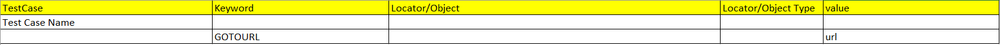This keyword is used for clicking web elements.
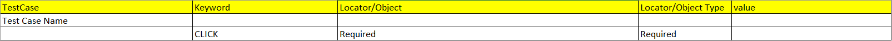The driver will aim at a specific web element based on the locator/object in the test script.
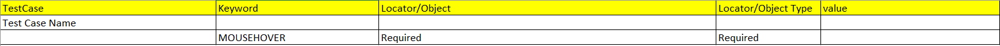This keyword is used for clearing all the text input in the text field.
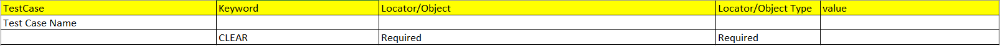This keyword is basically used for typing text in the text fields.
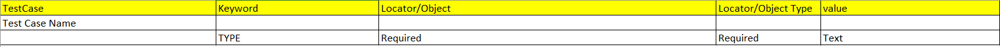The TYPEPASSWORD has similarities to the TYPE keyword but in this instance,
the keyword requires encrypted text in the value column of test script.
The framework first gets the encrypted text, decrypts the text during the test step execution, and finally types the decrypted text on the text field.
The purpose of this keyword is to store text in the hashmap that needs a unique key to access it later on in the test run execution.
This is quite helpful, when you want to compare text from different sections of the website/web application including modals, dashboard, etc.
This keyword is used with VERIFYHASHMAPTEXTVALUE or VERIFYHASHMAPCONTAINSELEMENT.
This keyword gets and verifies whether the text element on the web application is exactly the same as the stored value in the hashmap using its unique key.
This keyword is similar to the VERIFYHASHMAPTEXTVALUE but in this instance, it checks if the text element contains the value in the hashmap.
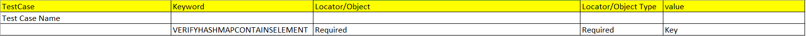This keyword stores the status of the checkboxes in the hashmap, the value can be either true or false.
This keyword compares the status of the checkbox in the web application if it matches the stored value in the hashmap.
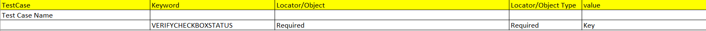The driver will get the current URL and compare it to the value stored in the test script.
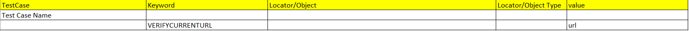The driver will check if the element is displayed in the web application.
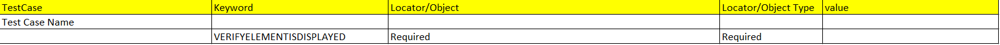The driver will check if the element is not displayed in the web application.
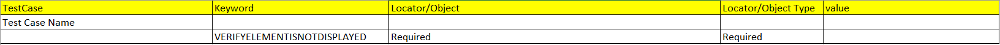This keyword gets and verifies the text element on the web application if it is exactly the same as the stored value in the test script.
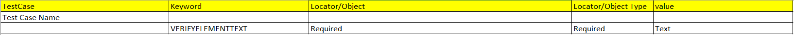This keyword checks if the text element in the web application contains the value provided by the user/tester in the test script.
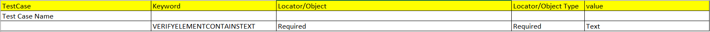This keyword checks if the date in the web application and the current date are exactly the same. In using this keyword, you must get the time format of the web element e.g. MM-dd-yyyy.
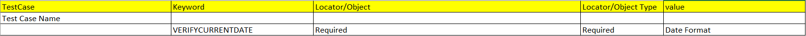The driver will redirect the current tab to the previous page.
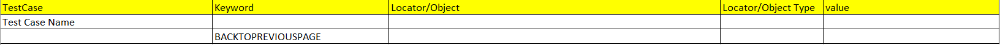This keyword will refresh the current tab.
This keyword switches the driver to the child window so that all test steps will be executed there.
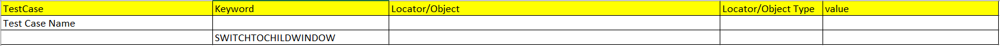This keyword allows the user/tester to select the window of choice by providing its window title in the test script.
To get the window title, open the element inspector (CTRL + SHIFT + I),
find the <'title'> under the <'head'> tag. You can also find it on the tab of a web browser.
Compared to the SWITCHTOCHILDWINDOW and SWITCHTOPARENTWINDOW, this keyword is slightly slower since it goes through the existing
windows and checks if the window title is similar to the one provided by the user/tester.
This keyword switches the driver to the parent window to execute the test steps.
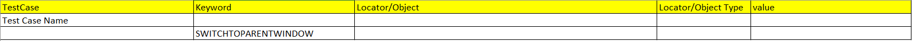The driver will open a new tab and redirect to the URL specified in the test script.
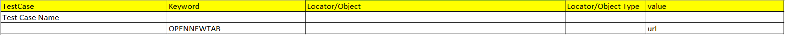This allows the user/tester to close a specific window or tab by the window title set in the test script.
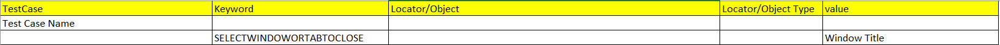The driver will open a new incognito window and redirect to the URL specified in the test script.
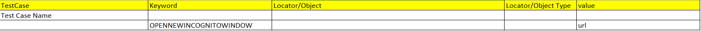